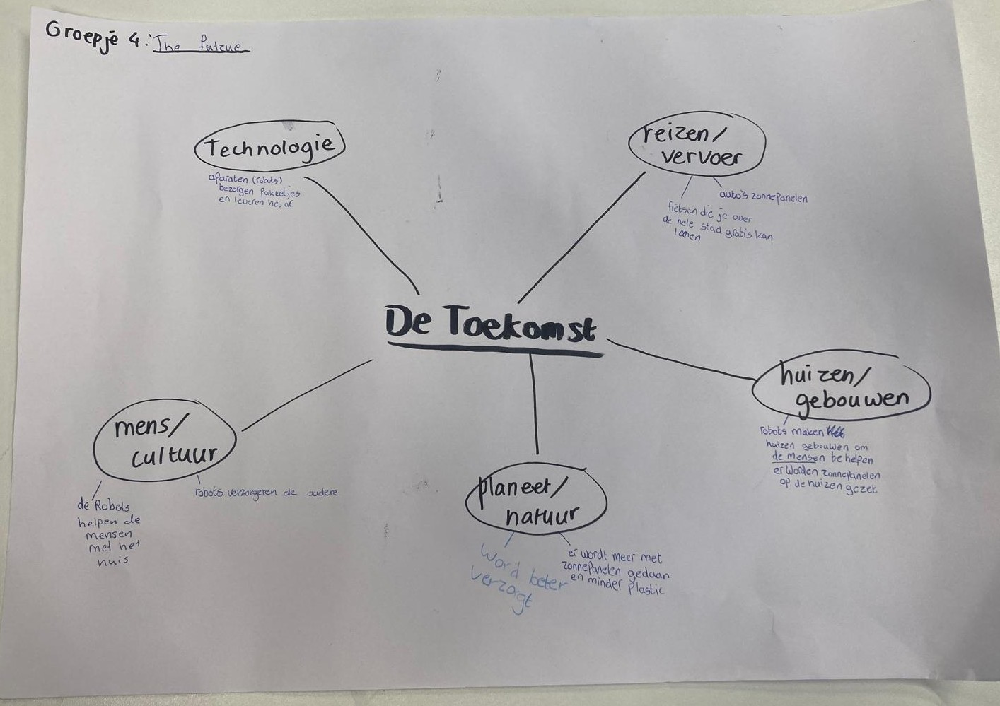

Aan de hand van het thema 'maak de toekomst samen' hebben leerlingen van het Francois Vatel hebben hun ideeën vertaald naar 3D werelden vol creativiteit, technologie en verbeelding. Door alle losse ontwerpen samen te brengen ontstaat één gedeelde toekomstvisie waarin iedere bijdrage onderdeel wordt van een groter geheel.
Bekijk het projectHet project begon met de vraag: “Hoe kunnen we samen de toekomst vormgeven?” Vanuit dit thema gingen de leerlingen met elkaar in gesprek over hun ideeën voor de wereld van morgen. Dit deden zij aan de hand van een mindmap-canvas waarop verschillende subthema’s stonden, zoals mens, natuur, technologie, wonen en reizen. In groepjes vulden de leerlingen het canvas aan met hun eigen visies op hoe deze thema’s er in de toekomst uit zouden kunnen zien.
De mindmaps vulden zich al snel met ideeën over robots, vliegende auto’s en een planeet waarin de natuur weer centraal staat. Als gastdocent stimuleerde ik de leerlingen om verder te denken dan hun eerste idee. Wanneer bijvoorbeeld het onderwerp AI werd opgeschreven, stelde ik vragen zoals: “Zie je AI als iets positiefs?”, “Hoe ziet AI er in de toekomst uit?” en “Welk probleem zou het kunnen oplossen?”.

Dit leidde tot meer uitgewerkte en beeldende ideeën. Zo stelde één leerling dat AI al het werk zou overnemen en mensen niks meer hoeven te doen. Dit schetste een duidelijker beeld van de toekomst en het was iets dat goed vertaald kon worden naar een 3D-model. Uiteindelijk ontwikkelde iedere leerling een eigen concreet idee dat goed vertaald kon worden naar een 3D-model. Deze modellen zijn vervolgens samengebracht tot één gezamenlijke scene.
In deze video zie je hoe de leerlingen aan de slag gingen in Blender om hun werelden in elkaar te zetten. Blender is gratis Nederlandse software waarin je 3D kunt modelleren. In de lessen hebben de leerlingen het volgende geleerd:
De modellen zijn samengebracht in één scene waardoor er een gezamenlijke wereld van de toekomst ontstaat waar ze samen aan hebben gewerkt.